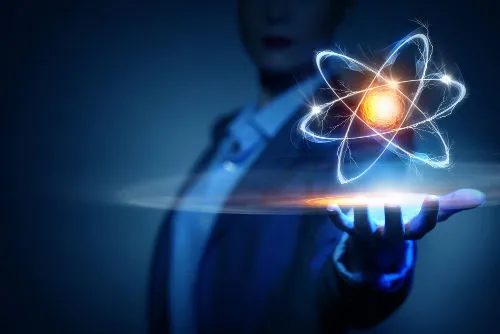

O átomo é uma estrutura (composta por próton, nêutron, elétron, núcleo, níveis, subníveis e orbitais) que forma a matéria.

Átomo é o nome dado ao formador da matéria (tudo aquilo que ocupa espaço e
possui massa).
Esse nome foi proposto pelos filósofos gregos Demócrito e Leucipo. Elementos
químicos,
moléculas, substâncias e materiais orgânicos ou inorgânicos são formados por
átomos.
Em sua constituição, o átomo apresenta partículas (prótons, nêutrons e elétrons), não sendo
a menor parte da matéria. Todavia, sua visualização não é possível. O que
se conhece sobre o
átomo está relacionado com experimentos físicos, químicos e aspectos matemáticos comprovados
cientificamente.
A evolução do conhecimento sobre o átomo fez com que diversas tecnologias fossem
desenvolvidas e aperfeiçoadas.
- Núcleo: região mais densa do átomo e comporta prótons e nêutrons;
- Níveis de energia: regiões que envolvem o núcleo e que abrigam subníveis,
orbitais e
elétrons. Há sete níveis de energia, que são representados pelas letras K, L, M, N, O, P e
Q;
- Subníveis de energia: são regiões que abrigam os orbitais. Estão
presentes em todos os
níveis e são representados por letras (s, p, d f). Sua quantidade depende de cada nível: K
(possui subnível s), L (possui subníveis s e p), M (possui subníveis s, p e d), N (possui
subníveis s, p, d e f), O (possui subníveis s, p, d e f), P (possui subníveis s, p e d) e Q
(possui subníveis s e p);
- Orbitais atômicos: regiões de maior probabilidade de se encontrar um
elétron. Cada subnível
apresenta uma quantidade diferente de orbitais: s (um orbital), p (três orbitais), d (cinco
orbitais) e f (sete orbitais);
- Prótons: partículas positivas (representadas por p);
- Elétrons: partículas negativas que apresentam também comportamento de
onda (representadas
por e);
- Nêutrons: partículas sem carga que diminuem a repulsão entre os prótons
no núcleo
(representadas por n).
A forma mais simples de representar um átomo é utilizando a sigla do elemento químico que
ele forma. A sigla Se, por exemplo, representa todos os átomos que formam o elemento químico
selênio.
A sigla que representa o átomo ainda pode fornecer duas importantes informações: o número
atômico (representado pela letra Z e sempre do lado esquerdo inferior da sigla do átomo) e o
número de massa (representado pela letra A, podendo ser posicionado do lado esquerdo ou
direito na parte superior da sigla do átomo).
- Número atômico (Z): indica o número de prótons presentes no núcleo
do
átomo e o número de
elétrons (e) presentes nos níveis de energia.
- Número de massa (A): indica a massa presente no núcleo do átomo, que
resulta da soma do
número de prótons (p) e o número de nêutrons (n).
Os átomos de um mesmo elemento químico ou de elementos químicos diferentes podem ser
comparados quanto ao número de prótons, elétrons, nêutrons e massa, sendo classificados da
seguinte forma:
a) Isótopos
São átomos que apresentam:
- mesmo número atômico;
- mesmo número de prótons;
- diferente número de massa;
- diferente número de nêutrons;
Exemplo:
Os átomos A e B são isótopos porque:
- Átomo A apresenta 15 prótons, número atômico igual a 15, 15 elétrons, 15
nêutrons e número
de massa igual a 30.
- Átomo B apresenta 15 prótons, número atômico igual a 15, 15 elétrons, 20
nêutrons e número
de massa igual a 35.
b) Isóbaros
São átomos que apresentam:
- diferentes números atômicos;
- diferentes números de prótons;
- diferentes números de elétrons;
- mesmos números de massa;
- diferentes números de nêutrons.
Exemplo:
Os átomos C e D são isóbaros porque:
- Átomo C apresenta 32 prótons, número atômico igual a 32, 32 elétrons, 23 nêutrons e número
de massa igual a 55.
- Átomo D apresenta 37 prótons, número atômico igual a 37, 37 elétrons, 18 nêutrons e número
de massa igual a 55.
c) Isótonos
São átomos que apresentam:
- diferentes números atômicos;
- diferentes números de prótons;
- diferentes números de elétrons;
- diferentes números de massa;
- mesmo número de nêutrons.
Os átomos E e F são isótonos porque:
- Átomo E apresenta 20 prótons, número atômico igual a 20, 20 elétrons, 20
nêutrons e número
de massa igual a 40.
- Átomo F apresenta 30 prótons, número atômico igual a 30, 30 elétrons, 20
nêutrons e número
de massa igual a 50.
d) Isoeletrônicos
São átomos que apresentam:
- mesmo número de elétrons.
OBS.: átomos isoeletrônicos podem apresentar ainda o mesmo número de massa
(isóbaros), mesmo
número de nêutrons (isótonos) ou mesmo número de prótons
(isótopos).
Exemplo:
Os átomos G e H sao isoeletrônicos porque:
- Átomo G apresenta 16 prótons, número atômico igual a 16, 18 elétrons (o
sinal -2 indica que
ele possui dois elétrons a mais que o número de prótons), 17 nêutrons e número de massa
igual a 33.
- Átomo H apresenta 21 prótons, número atômico igual a 21, 18 elétrons (o
sinal +3 indica que
ele possui três elétrons a menos que o número de prótons), 27 nêutrons e número de massa
igual a 48.